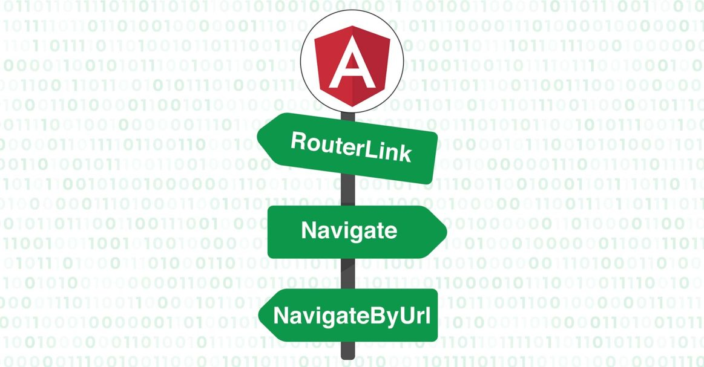

<div id="carouselExampleDark" class="carousel carousel-dark slide" data-bs-ride="carousel">

    <div class="carousel-inner">
        <div class="carousel-item active" data-bs-interval="10000">
            
            <div class="carousel-caption d-none d-md-block">
                <h5>La navegacion en Angular</h5>
                <p>Establecidas las configuraciones necearias que requiere Angular para la navegacion
                    el atributo o directiva routerLink, que nos provee Angular para la conexion entre templates
                    Proporcionando así reducciones en los tiemmpos de recarga y aprovechamiento eficiente de  las
                    capacidades de tiempo de estos FrameWork. VS href="", enlace tradicional con redireccion a otra
                    pagina(sea cual sea) esas recargas relentizan la ejecucion.</p>
            </div>

        </div>
        <button class="carousel-control-prev" type="button" data-bs-target="#carouselExampleDark" data-bs-slide="prev">
            <span class="carousel-control-prev-icon" aria-hidden="true"></span>
            <span class="visually-hidden">Ir Componente 1</span>
        </button>
        <button class="carousel-control-next" type="button" data-bs-target="#carouselExampleDark" data-bs-slide="next">
            <span class="carousel-control-next-icon" aria-hidden="true"></span>
            <span class="visually-hidden">Aprende mas</span>
        </button>
    </div>